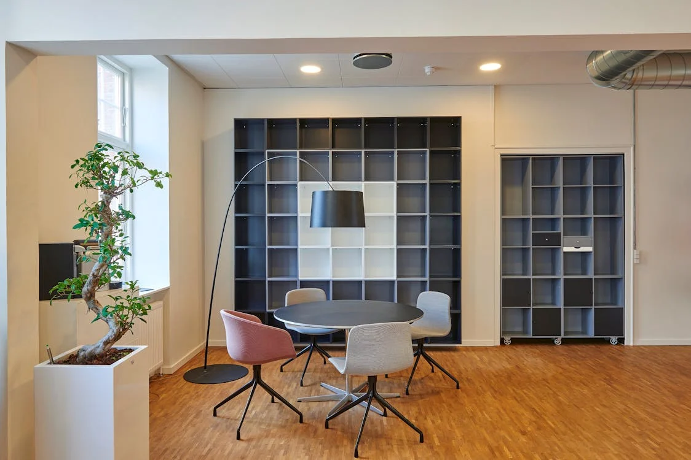

August 12, 2024
Written in KNUST..
Missions and Visions of Zero Hunger in Relation to SDG 2 Sustainable Development Goal 2 (SDG 2), also known as "Zero Hunger," is a global initiative aimed at ending hunger, achieving food security, improving nutrition, and promoting sustainable agriculture by 2030. The missions and visions of Zero Hunger encapsulate a comprehensive approach to addressing one of humanity's most pressing challenges. Understanding these missions and visions is crucial to grasping how SDG 2 aims to transform global food systems and ensure that no one goes hungry. Mission of Zero Hunger 1. Ending Hunger and Food Insecurity The primary mission of Zero Hunger is to end hunger and food insecurity worldwide. This entails ensuring that all people, particularly the most vulnerable, have reliable access to sufficient, safe, and nutritious food year-round. The focus is on: - Providing Emergency Food Assistance: In crisis situations, such as conflicts or natural disasters, immediate food aid is essential to save lives and prevent malnutrition. - Strengthening Food Systems: Building resilient food systems that can withstand shocks and stresses, ensuring continuous food availability. 2. Improving Nutrition Beyond mere food availability, Zero Hunger aims to improve the quality of diets. Malnutrition, in all its forms, remains a critical issue. The mission includes: - Reducing Child Malnutrition: Targeting the reduction of stunting and wasting among children under five years of age. - Addressing Micronutrient Deficiencies: Ensuring that populations receive adequate vitamins and minerals to prevent deficiencies that can lead to severe health problems. 3. Promoting Sustainable Agriculture A sustainable approach to agriculture is fundamental to achieving Zero Hunger. This involves: - Supporting Smallholder Farmers: Enhancing the productivity and incomes of small-scale food producers by providing access to resources, knowledge, and markets. - Encouraging Eco-Friendly Practices: Promoting agricultural practices that maintain soil health, reduce greenhouse gas emissions, and conserve biodiversity. 4. Ensuring Food Equity The mission also emphasizes equitable access to food. It addresses social inequalities that affect food distribution and availability, ensuring that marginalized and disadvantaged groups are not left behind. Vision of Zero Hunger 1. A World Free from Hunger The overarching vision of Zero Hunger is a world where hunger has been eradicated. In this vision, every individual has access to the food needed for a healthy and productive life. This aligns with the broader human rights framework, recognizing access to food as a fundamental human right. 2. Sustainable and Resilient Food Systems Zero Hunger envisions food systems that are not only productive but also sustainable and resilient. These systems would be capable of: - Adapting to Climate Change: Implementing practices that mitigate climate impacts and enhance the capacity of agriculture to adapt to changing conditions. - Reducing Environmental Footprint: Minimizing the negative environmental impacts of agriculture through sustainable land, water, and resource management. 3. Empowered and Prosperous Farmers The vision includes empowered smallholder farmers who are key to achieving global food security. It sees farmers with secure land rights, access to innovative agricultural technologies, and the ability to participate effectively in markets, leading to improved livelihoods and economic growth. 4. Integrated and Inclusive Policies Achieving Zero Hunger requires integrated policies that consider the interconnectedness of food security, nutrition, and sustainable agriculture. The vision calls for: - Comprehensive Policy Frameworks: Developing and implementing policies that address the multiple dimensions of food security and agricultural sustainability. - Global and Local Collaboration: Encouraging partnerships and collaborations at all levels to ensure coordinated and effective action. 5. Education and Awareness A key part of the vision is raising awareness about the importance of nutrition and sustainable practices. This involves educating communities about healthy diets and encouraging consumer behaviors that support sustainable food systems. Conclusion The missions and visions of Zero Hunger encapsulate a comprehensive approach to eradicating hunger and ensuring food security, aligned with SDG 2. By focusing on ending hunger, improving nutrition, promoting sustainable agriculture, and ensuring food equity, Zero Hunger aims to create a world where everyone has the food they need to lead healthy, productive lives. The vision of sustainable and resilient food systems, empowered farmers, inclusive policies, and heightened awareness is central to achieving these ambitious goals by 2030.
Theophilus Osei Acheampong, Computer Science 4, Department of Computer Science, College of Science, Kwame Nkrumah University of Science and Technology.